01 · Preparando turno
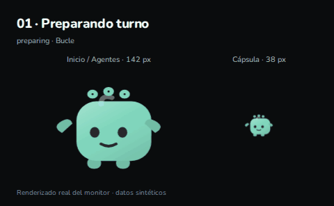
preparingBucle · 4 sEnlace
26 GIFs · personaje grande y cápsula de 38 px. Pide cambios usando el número o la clave.
Los gestos únicos se repiten aquí para revisarlos. Las referencias estáticas no tienen movimiento.
Índice Markdown · Datos del renderizado

preparingBucle · 4 sEnlace
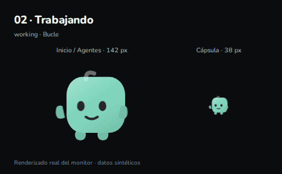
workingBucle · 46.8 sEnlace
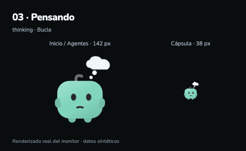
thinkingBucle · 47.6 sEnlace
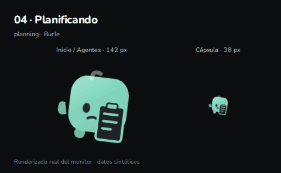
planningBucle · 3.2 sEnlace
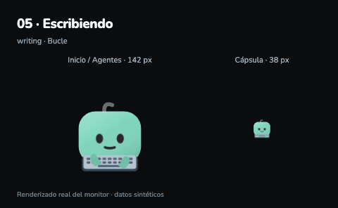
writingBucle · 3.6 sEnlace
executingBucle · 4 sEnlace
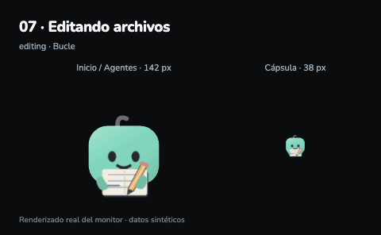
editingBucle · 11.2 sEnlace
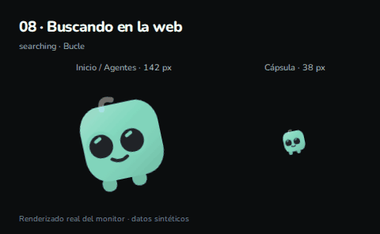
searchingBucle · 5.2 sEnlace
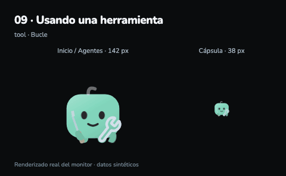
toolBucle · 7.2 sEnlace
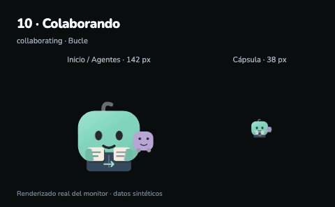
collaboratingBucle · 16.8 sEnlace
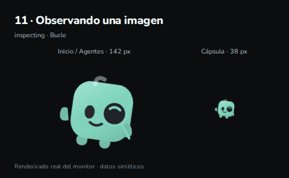
inspectingBucle · 3 sEnlace
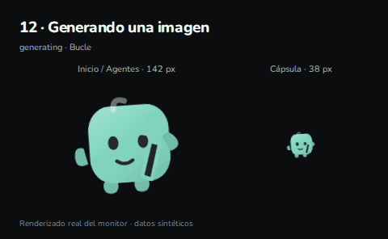
generatingBucle · 15.4 sEnlace
reviewingBucle · 4 sEnlace
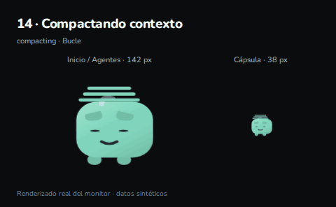
compactingBucle · 3.6 sEnlace
approvalBucle · 5.6 sEnlace
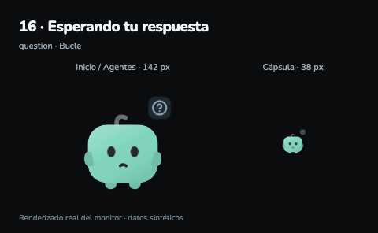
questionBucle · 4.8 sEnlace
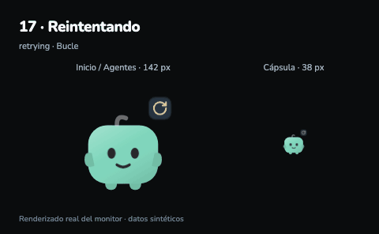
retryingBucle · 4 sEnlace
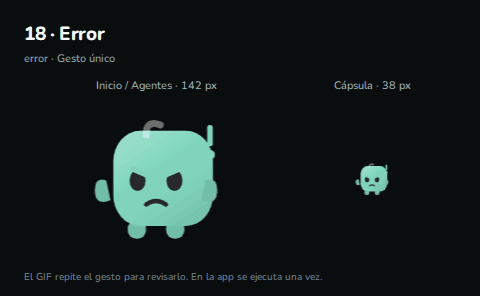
errorGesto único · 2.4 sEnlace
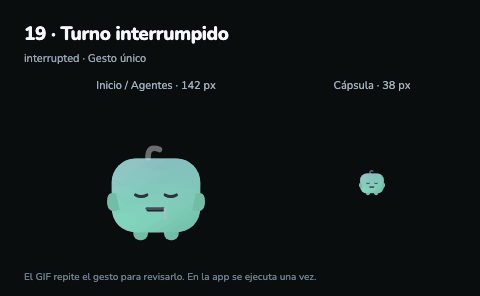
interruptedGesto único · 2.4 sEnlace
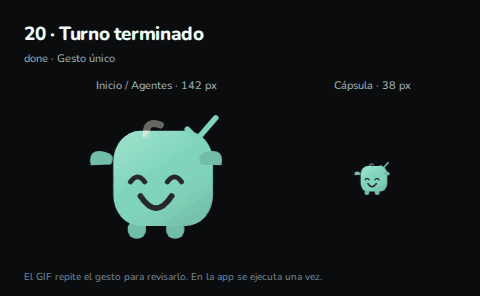
doneGesto único · 2.4 sEnlace
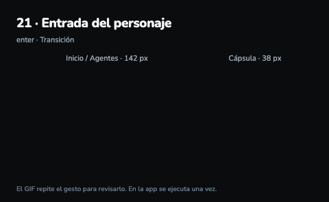
enterTransición · 2.4 sEnlace
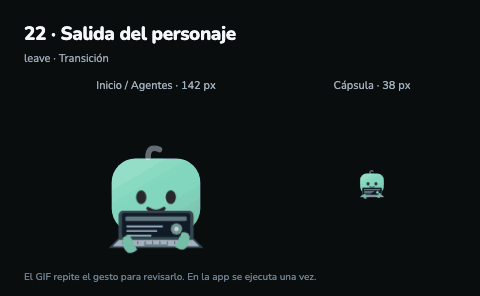
leaveTransición · 2.4 sEnlace
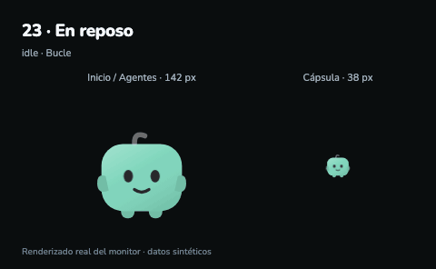
idleReferencia estática · 0.05 sEnlace
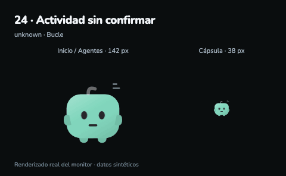
unknownReferencia estática · 0.05 sEnlace
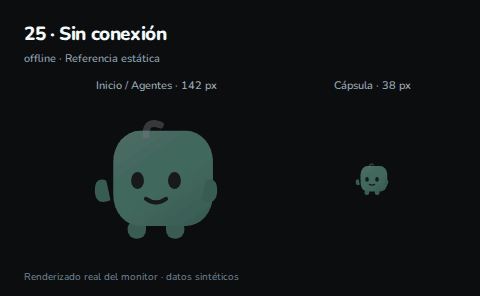
offlineReferencia estática · 0.05 sEnlace
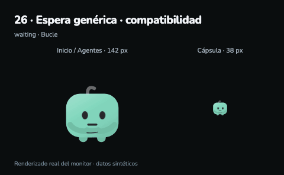
waitingReferencia estática · 0.05 sEnlace